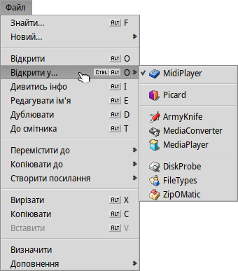

| Зміст |
|
Підключення дисків Навігація Декорація Налаштування Tracker Робота з файлами Статус операції |
Tracker (Файловий менеджер)
Tracker – комп'ютерна програма, що надає інтерфейс користувача для роботи з файловою системою та файлами. Це навігаційний файловий менеджер, який фактично являє собою основу графічної оболонки користувача Haiku.
Дозволяє виконувати найчастіші операції з папками і файлами: створення, відкриття/програвання/запуск/перегляд, редагування, переміщення, перейменування, копіювання, вилучення, зміну атрибутів та властивостей, пошук файлів та призначення прав.
Як і будь-яка інша програма (Робочий стіл з його значками – це просто повноекранне вікно у фоновому режимі), Tracker з'являється зі своїми вікнами на панелі задач Deskbar, і його можна закрити і перезапустити. Найпростіший спосіб завершити роботу і перезапустити аварійно завершений чи завислий Tracker (або Deskbar) – це викликати Team Monitor.
 Підключення дисків
Підключення дисків
Щоб отримати доступ до жорсткого диска, компакт-диска, USB-накопичувача тощо, спочатку Вам потрібно підключити (монтувати) том, тобто повідомити системі, що він є. Для цього зробіть правий клік миші на робочому столі або вже підключеному томі (наприклад, загрузочному диску) і виберіть том у підменю .
Ви знайдете аналогічне меню на панелі задач Deskbar.
У підменю є пункт , щоб Вам не довелося підключати (монтувати) все вручну після кожної загрузки.
Ці настройки автоматично підключать будь-який пристрій зберігання даних, який Ви під'єднаєте або вставите а також усі диски, які були підключені під час попередньої загрузки.
Навігація
За замовчуванням, коли Ви переходите до папки подвійним кліком, Tracker відкриває нове вікно, залишаючи батьківське вікно відкритим. Це може швидко призвести до переповнення робочого столу відкритими вікнами.
Цьому можна запобігти, утримуючи клавішу OPT, яка автоматично закриває батьківське вікно.
Це також стосується навігації за допомогою клавіатури. Докладніше про це дивіться у розділі Клавіші швидкого доступу.
Переміщення по папках – одне з основних призначень Tracker, як і файлових менеджерів на інших платформах. Файловий менеджер системи Haiku має кілька унікальних функцій, які допоможуть Вам робити це ефективно.
Деталізація по підменю
Замість того, щоб постійно відкривати папку за папкою подвійним кліком, є кращий спосіб навігації по файловій ієрархії:
Правий клік миші на папці викличе звичайне контекстне меню, першим елементом якого Ви побачите підменю поточної папки, яке дозволить Вам перейти на рівень нижче. Просто рухайтеся вниз по ієрархії, поки не знайдете потрібний Вам файл або папку і клацніть на ньому, щоб відкрити. Вище показано вміст папки /arcaos/GeneralUser GS 1.471/instrument lists/.
Якщо Ви виконаєте ці дії під час перетягування файлу, він буде переміщений туди, куди Ви його зрештою скинете.
Цей простий спосіб можна використовувати у кожному вікні Tracker:
Якщо зробити клік на нижній лівій частині вікна, де вказано кількість елементів поточної папки, Ви отримаєте підменю для папок розташованих на рівень вище від Вашої поточної папки. Звідти Ви можете переходити по папках, як зазвичай.
Зверніть увагу, що Робочий стіл завжди є верхнім рівнем файлової ієрархії, оскільки саме на ньому Tracker показує підключені томи. Отже, якщо Ви хочете перейти на інший диск, Вам слід спершу перейти на верхній рівень (Робочий стіл) а звідти перейти на інший диск.
Таке саме підменю з'являється, коли ви перетягуєте файл над папкою. Після короткої затримки при наведенні курсору миші з файлом з'являється підменю, в якому Ви можете перейти до пункту призначення. Якщо Ви ініціювали перетягування правою кнопкою миші, Ви можете вибирати між копіюванням, переміщенням або створенням посилання на файл, коли відпускаєте кнопку миші.
Перехід до файлів з випередженням набору тексту
Можливо, Ви вже знайомі з такою концепцією по файлових менеджерах інших операційних систем: набравши перші кілька літер назви файлу можна перейти до першого файлу назва якого містить ці початкові символи. У Haiku ця ідея була розвинута ще далі. Якщо файлу, назва якого містить ці літери, не існує, пошук перейде до першого файлу, що містить цей рядок у будь-якій частині назви. А якщо немає нічого подібного у назві, то буде виконано пошук за атрибутами.
У наведеному вище прикладі є багато файлів, що починаються з «Haiku logo», що робить простіші підходи до пошуку з набором тексту цілком марними. Однак у Haiku введення слова «web» призводить до переходу до його першого входження у назві файлу «Haiku logo - website». Символи, які Ви вводите, з'являються у нижній лівій частині вікна, де зазвичай відображається кількість усіх елементів папки. За секунду після введення символу екран повернеться до звичайного вигляду і Ви будете готові до нового пошуку з випередженням набору тексту.
Випереджаюча фільтрація
Замість того, щоб переходити до файлу під час введення тексту є можливість відфільтрувати усі файли, які не відповідають введеному рядку. Це може значно підвищити якість пошуку, особливо при роботі у переповнених файлами папках. Використовуючи клавіші SHIFT SPACE як розділювач Ви зможете фільтрувати по кілька рядків одразу.
На відміну від переходу з набором тексту, фільтрація триватиме доки Ви не натиснете ESC або не закриєте вікно (або не вийдете з папки при використанні одновіконної навігації).
Випереджаюча фільтрація включається на панелі Налаштування Tracker.
Декорація
Вікно Tracker пропонує три різні режими відображення у меню :
(ALT 1) – великі значки, Ви можете змінити розмір значків у підменю або збільшити/зменшити за допомогою клавіш ALT +/-.
(ALT 2) – маленькі значки.
(ALT 3) – деталізований список файлів з можливістю показувати/приховувати атрибути файлів (дивіться розділ Атрибути.)
Меню пропонує ряд інших функцій:
(ALT Y) – підганяє розмір вікна під його вміст для оптимального відображення усіх елементів.
– підменю, доступне лише у режимі відображення значків або міні-значків, дозволяє встановити порядок сортування за різними критеріями:
, , , , , ,
– інвертує порядок сортування
(ALT K) – вирівнює усі значки за невидимою сіткою. Утримуйте клавішу SHIFT і пункт меню зміниться на , який додатково сортує усі значки відповідно до вибраного вище критерію.
(SHIFT ALT A) – відбирає файли відповідно до заданого регулярного виразу.
(ALT W) – закриває вікно. Утримуйте клавішу SHIFT і пункт меню зміниться на , який закриє усі вікна Tracker.
(ALT Q) – закриває усі вікна Tracker у поточній робочій області. Корисний пункт, коли Ви забули утримувати клавішу OPT при переході між папками і усі відкриті вікна Tracker захаращують Ваш робочий простір.
Іноді Ви просто хочете переставити кілька значків, не застосовуючи пункт (ALT K). У такому разі Ви виділяєте ці значки і починаєте перетягувати їх на нове місце. Перш ніж перетягнути їх туди, утримуйте натиснутою клавішу ALT. Це вирівняє значки за невидимою сіткою.
Перший стовпець у режимі визначає підписи значків у режимах та . Це стосується і ширини підписів: Якщо підпис обрізається по ширині колонки у режимі , він буде аналогічно обрізаний при перемиканні в режим та .
Зазвичай, перший стовпчик - це назва файлу, але Ви можете переключитися у режим , перетягнути стовпець ліворуч і отримати значки позначені їх розміром, коли повернетеся назад у режим . А то!
Решта функцій є досить зрозумілими, залишаються лише налаштування Tracker.
Налаштування Tracker
Пункт меню відкриває панель, яка пропонує параметри і опції, які, якщо вони не зовсім очевидні, стануть зрозумілими після того, як Ви їх спробуєте. Оскільки усі настройки застосовуються у реальному часі, Ви одразу побачите зміни.
Отже, коротко про неочевидні настройки:
– дозволяє визначити як відображати підключені диски, безпосередньо на Робочому столі або в окремому вікні після натискання на значок «Диски».
– дозволяє встановити режим , тобто папка, на якій Ви зробили подвійний клік, відкриється не в окремому вікні а у вже відкритому вікні, замінюючи відображення елементів батьківської папки своїм вмістом. Це не те саме що клік з утриманням клавіші OPT , як описано вище, оскільки Ви втратите збережені для кожного вікна позицію і розмір.
Перед тим, як перевести Tracker у режим , оскільки він може здатися Вам більш звичним, ми рекомендуємо спочатку спробувати навігацію за допомогою меню – після звикання Ви зможете працювати набагато швидше. З іншого боку, навігація в одному вікні пропонує Навігатор, в якому Ви можете ввести або копіювати&вставити шлях до файлу та використовувати кнопки «Назад», «Вперед» і «Вгору».
Активація опції фільтруватиме вміст вікна Tracker при введенні тексту, щоб відображати тільки ті файли, в яких текст у назві або будь-якому показаному атрибуті збігається з введеним Вами текстовим рядком. Дивіться вище.
Увімкніть опцію і Ви не побачите файли, що починаються з "." – популярної конвенції іменування конфігураційних файлів у Linux.
Ви можете увімкнути опцію і мініатюри замінять стандартні значки для файлів зображень.
– дозволяє показати/сховати індикатор вільного місця, який відображається поряд із значком диска та задати його колір.
– дозволяє визначити коли і як підключаються (монтуються) диски, як описано вище у параграфі Підключення дисків.
Ця панель налаштувань також доступна у меню панелі задач Deskbar як пункт Tracker.
Робота з файлами
Більшість команд меню також доступні з контекстного меню, яке можна викликати правою кнопкою миші на вибраному файлі.
Як завжди, команди досить зрозумілі.
– пошук файлів або папок. Додаткову інформацію дивіться у розділі Запити.
- Create a new folder or any other file based on a template.
Choosing at the bottom opens the folder /boot/home/config/settings/Tracker/Tracker New Templates. Create a file or folder there and it will appear as a template in the menu. The new file/folder created by the template will have its filetype, filename, contents, and all its other attributes. In case of a folder, it'll also have its window size/position and attribute column layout.
In the screenshot above, you see the custom template folders "Email folder" and "Music folder". Both will create folders with those same custom overlay icons and have the relevant attributes already set.
You can also sort your templates into custom submenus. Just choose and a new special folder gets created in Tracker New Templates that you then rename to fit its purpose. Copy your template files there to appear in the new submenu. The screenshot above shows the submenus "C dev files" and "Office files".
– підменю, яке показує усі програми, які можуть працювати з таким типом файлів.
Пріоритетна програма, яка відкриває файл при подвійному натисканні, відображається з позначкою. У цьому підменю спочатку перелічено програми, які можуть працювати з цим конкретним типом файлу, у нашому випадку це файл MIDI, тип audio/x-midi або MIDI file. Далі йдуть усі програми, які можуть обробляти цей супертип взагалі, у даному випадку audio/*. Останніми у списку йдуть програми, які можуть працювати з будь-яким типом файлів. Якщо Ви натиснете не на програму у підменю, а на сам пункт меню , відкриється панель:
Там Ви знову побачите програми, які були перелічені у підменю. Вибравши одну з них і натиснувши кнопку , Ви зміните програму за замовчуванням для усіх файлів цього типу, у нашому випадку файлів типу audio/x-midi.
-
При виборі цього пункту відкриється панель, яка показує метадані файлу і дозволяє редагувати його дозволи. Ви можете перейменувати його, натиснувши на назву файлу у верхній частині панелі.
Панель містить три вкладки:
- : Показує стандартні дані, такі як розмір, дату створення/модифікації, тип і розташування файлу. Натисніть на шлях розташування, щоб відкрити батьківський каталог файлу. Список дозволяє вибрати пріоритетну програму для відкриття цього конкретного файлу.
- : Дозволяє змінювати права доступу до файлу користувачам «Власник», «Група» та «Інший».
- : Показує список усіх додаткових атрибутів файлу з їх значенням і типом.
, , – пункти меню, які дозволяють перейменувати файл, зробити дублікат файлу, перемістити вибраний файл (файли) до смітника.
, , – підменю, які дозволяють переміщати, копіювати та створювати посилання на вибраний файл(и) використовуючи метод деталізації по підменю. Утримання клавіші SHIFT під час виклику меню надає можливість створити відносне посилання. Таке посилання позначається лінією з крапок, якою підкреслено значок файлу
, , – пункти меню, які дозволяють вирізати, копіювати та вставляти файли через буфер обміну. Утримання клавіші SHIFT під час виклику меню змінює пункти на , , щоб Ви могли обробити більше файлів, можливо з іншої папки, які Ви можете вставити куди-небудь пізніше. Крім того, з натиснутою клавішею SHIFT Ви можете вставляти копійовані в буфер обміну файли як посилання.
– пункт меню, який дозволяє встановити тип файлу, якщо тип не було визначено раніше, наприклад, у випадку передачі файлу за допомогою команди wget, при виконанні якої тип файлу не встановлюється. Утримання клавіші SHIFT під час виклику меню змінює пункт на , який ідентифікує тип файлу і виправить його, якщо раніше він був помилковим.
– підменю, яке пропонує Вам стандартні доповнення Tracker та програми які можуть обробляти конкретний вибраний файл(и). Додаткову інформацію дивіться у розділі Tracker – Доповнення.
Стан виконання операції
Коли Ви копіюєте, переміщуєте або видаляєте файли, Tracker показує прогрес у вікні стану. Якщо Ви ініціюєте більше однієї транзакції, кожне завдання отримує власний статус.
Праворуч знаходяться дві кнопки для призупинення або повної зупинки завдання. Іноді буває корисно тимчасово призупинити велику за розміром транзакцію. Наприклад, Вам може знадобитися швидко запустити ресурсоємну програму. Копіювання великих обсягів даних перевантажує пропускну здатність жорсткого диска і, таким чином, затримує робочий процес.